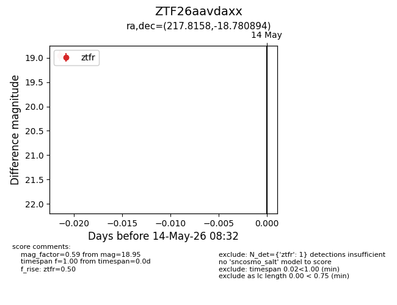
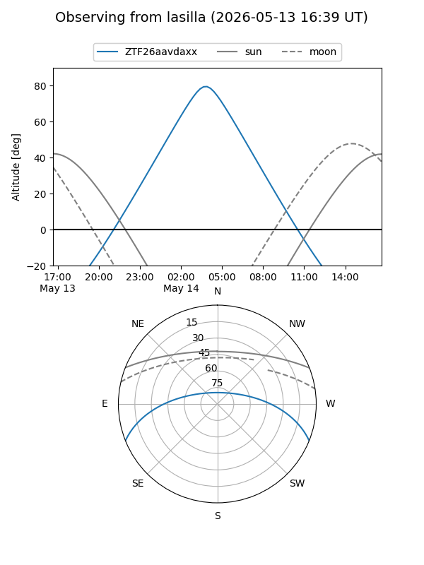
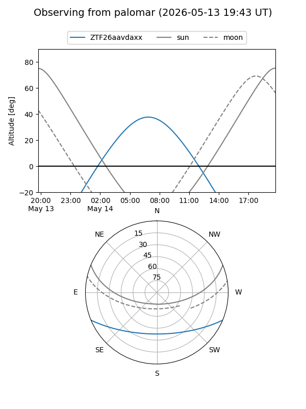

ZTF26aavdaxx
Target ZTF26aavdaxx at 2026-05-14 08:34
Aliases and brokers:
FINK: link
Lasair: link
ALeRCE: link
alt names
ZTF26aavdaxx (ztf,fink_ztf)
Coordinates:
equatorial (ra, dec) = 217.8158,-18.78089
equatorial (HMS+DMS) = 14:31:15.80,-18:46:51.22
galactic (l, b) = (333.4402,+38.10641)
Flags:
Photometry:
last ztfr=18.95
1 ztfr detections
Lightcurve

Visibility


Additional plots